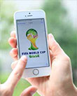
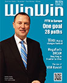
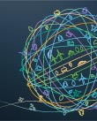
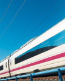

移动互联时代的数字盛宴
移动互联技术的蓬勃发展，4G技术的初露锋芒，社交应用的风靡，让人们在数字盛宴中见证足球界的兴衰起伏。
香港到法兰克福的“光速”连接
MegaFon横跨东西方的DREAM网络，不仅比海底光缆更可靠，还将成为促进全球经济发展的主动脉。
《营赢》第20期
本期封面：光纤网络迅速发展，推动各领域变革性的应用不断涌现。FTTH欧洲委员会理事长阐述了欧洲FTTH的发展现状和美好前景。
精简IT，敏捷商道
2014华为云计算大会上，来自全球的IT精英共论IT实践与变革之道。点此了解精彩详细内容。
全球首条4G地铁
2013年11月底，郑州地铁一号线eLTE车地通信系统正式建成，成为全球首个通过验证的地铁LTE车地无线系统。

“幸福轨道”有奖大调查
“幸福轨道”是什么？运力更强？收益更高？还是人便其行，货畅其流？来告诉我们你理想中的答案。
